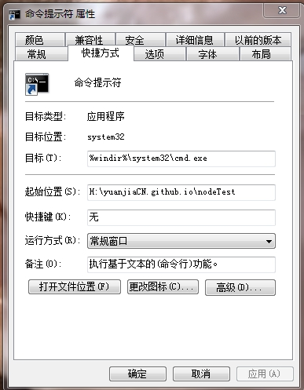
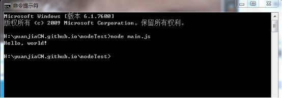

0.一些注意事项
第一行总是写上'use strict';是因为我们总是以严格模式运行JavaScript代码，避免各种潜在陷阱。
记得把命令行窗口的起始位置改到你的文件存放目录，不然就会一直报错啦↓（如图）
1.写一个简单node.js程序
在webstrom中编辑文件main.js
"use strict";
console.log("Hello, world!");
命令行窗口中输入：node main.js
打印出
H:\yuanjiaCN.github.io\nodeTest>node main.js
Hello, world!
2.命令行模式和Node交互模式
注意区分命令行模式和Node交互模式。
看到类似H:\yuanjiaCN.github.io\nodeTest>是在Windows提供的命令行模式：
输入node可进入Node交互式环境，在此环境下，可以直接输入JavaScritp代码并立即执行。
此外，在命令行模式运行.js文件和在Node交互式环境下直接运行JavaScript代码有所不同。 Node交互式环境会把每一行JavaScript代码的结果自动打印出来， 但是，直接运行JavaScript文件却不会。
例如，在Node交互式环境下，输入：
> 100 + 200 + 300;
600
直接可以看到结果600。
但是，写一个main.js的文件，内容如下：
100 + 200 + 300;
然后在命令行模式下执行：
H:\yuanjiaCN.github.io\nodeTest>>node main.js
发现什么输出都没有。
这是正常的。想要输出结果，必须自己用console.log()打印出来。把main.js改造一下：
console.log(100 + 200 + 300);
再执行，就可以看到结果：
H:\yuanjiaCN.github.io\nodeTest>>node main.js
输出
600
3.使用严格模式
如果在JavaScript文件开头写上'use strict';， 那么Node在执行该JavaScript时将使用严格模式。 但是，在服务器环境下，如果有很多JavaScript文件，每个文件都写上'use strict'; 很麻烦。我们可以给Nodejs传递一个参数，让Node直接为所有js文件开启严格模式：
node --use_strict main.js